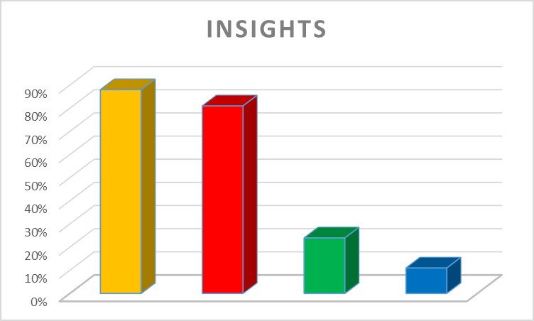

 |
WHO I AMCode Yellow!Well If you know something about the personality typography of Insights, you might already get the fact that I'm not really quiet. Yellow represents dynamic, enthousiast, expressive, persiuasive and visionary. To be more specific my type is called "Inspiring Motivator". I'm very creative and always full of new ideas. I like to motivate people to tag along, and I'm always enthousiast to make ideas work. You probably get it, if you are looking for someone quiet, calm and grey you might need a lot of ducktape to keep me down. My secondary color is red, which represents strong decision makers. I know what I want, and will work hard to reach my goals. Whatever I do, I keep the bigger picture in mind. |